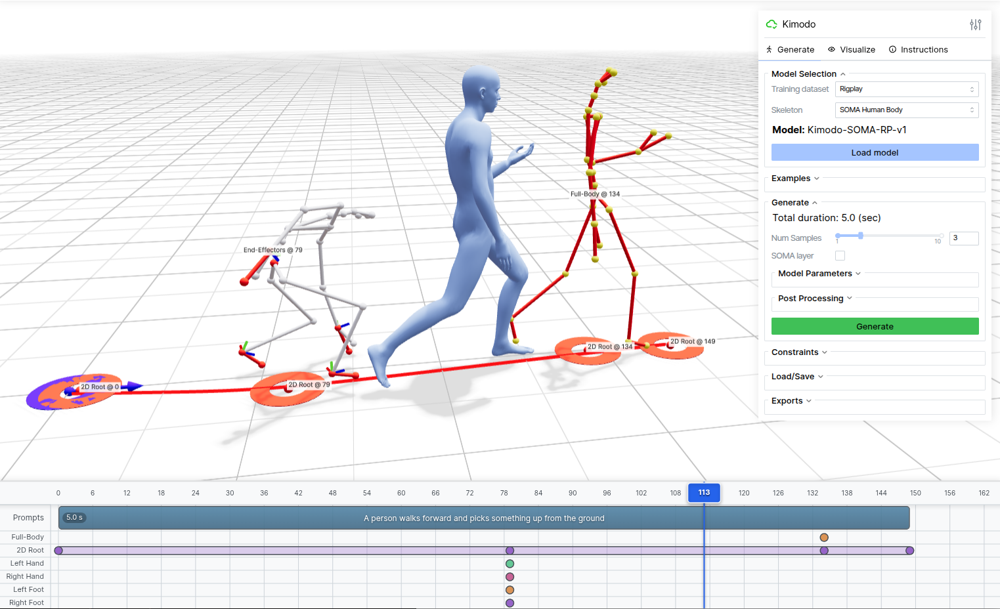

Clean-room Training
Kimodo
完整训练管线复现
对象：Kimodo-SOMA-SEED
用途：游戏美术精准骨架动画
- 01目标与场景
- 02论文原理
- 03预消融
- 04全量结果
- 05方法谱系
Part 1 · 目标与场景
用生成与约束，给游戏美术做精准骨架动画

看上的是生成能力与约束能力：文本 + Root / 末端 / 全身关键帧 → 可精控的骨架动画
01 · 看上什么
生成 + 约束
Kimodo 能同时吃自然语言和运动学约束，产出精准骨架动画。用它给游戏美术降本增效。
02 · 卡在哪里
特征绑在骨架上
单帧 369 维特征绑定特定骨架。游戏里骨架种类很多，公开权重无法直接迁到别的骨架。
03 · 因此要什么
自己训出媲美官方的管线
必须完全复现训练，性能对得上官方，才能为其他骨架训定制模型，而不是只会跑 Demo。
管线到手之后
重定向把动作数据迁到各种游戏骨架
定制训练为其他骨架训练专用 Kimodo
风格后训练在不同骨架的基模上做动作风格适配
02
论文原理
- 01目标与场景
- 02论文原理
- 03预消融
- 04全量结果
- 05方法谱系
Part 2 · 训练总图
训练总图：论文原图
GT Pose = \(x_0\)（369）= 预测目标；与 Text→LLM2Vec→52 prefix 一并进 Denoiser，Loss 对比 \(\hat x_0\) 与 GT。
Part 2 · 训练 · 动作表示
每帧 369 维：Root 5 + Body 364
Root
5
smooth root xyz · 3 + heading \((\cos\theta,\sin\theta)\) · 2
Local joint pos
90
30 关节 × xyz · root-relative 身体布局
Global 6D rot
180
30 关节 × 连续 6D · 避免欧拉奇异
Joint velocity
90
30 关节 × 全局速度 · 抑抖、保时序
合计 / 两阶段
369
Root TF→5 · Body TF→364 · 拼成 \(\hat x_0\)
悬停 / 点击左侧条目或骨架热区，联动高亮
整帧目标 \(x_0\in\mathbb{R}^{369}\)
\[
369 \;=\; \underbrace{5}_{\text{Root}}
\;+\;
\underbrace{90+180+90+4}_{364\text{ Body}}
\]
Denoiser 预测的是这套特征本身（不是原始旋转矩阵）。下一页：raw 369 → 全局归一化 → 才进入加噪 / 约束。
- Root TF 只出 global root 5 维
- Body TF 出 364，再与 root 拼成 \(\hat x_0\)
- 约束 / mask 的 slice 必须与这套索引对齐
Root · 5 维 · 骨盆锚点
图中骨盆附近高亮：整帧运动的全局锚。
- smooth root position：全局 xyz（3）
- heading：\((\cos\theta,\sin\theta)\)（2），平面朝向
- 训练常见：首帧 root XZ 归零 + 随机 heading 增广
\[
\text{Root}=[p_x,p_y,p_z,\cos\theta,\sin\theta]
\]
Local joint positions · 90
图中躯干与四肢关节高亮：相对 root 的局部坐标。
- 30 关节 × xyz = 90
- root-relative：去掉全局平移后的身体布局
- 与全局旋转一起描述姿态几何
Global 6D rotations · 180
同一套 30 关节：每个关节用连续 6D 表示全局旋转。
- 30 × 6 = 180
- 比欧拉角更稳，减轻奇异与不连续
- 几何 loss / FK 时会回到旋转流形
Joint velocities · 90
仍对应全身关节：全局速度通道，压抖动、保时序连贯。
- 30 关节 × 3 = 90
- 与位置/旋转一起进 Body 364
Foot contact · 4
图中双足热区：着地 / 离地信号，减轻脚滑。
- 通常对应左右足接触相关 4 通道
- 约束与评测里 foot contact / skate 指标与此对齐
Part 2 · 训练 · 全局归一化
raw 369 → 归一化 \(x_0\)：加噪与约束的工作域
Dataset 内顺序（与 training/data.py 一致）
Pose
→
raw 369
→
XZ→0
→
Heading
→
Norm
→
\(x_0\)
FK+分块拼出物理量纲特征 → 首帧 root XZ 归零 → 训练时随机 heading →
train-split stats 逐维归一化 → clean_motion
为什么要归一化
上一页 369 维混着不同物理量纲：米级位移、速度、6D 旋转、0/1 触地……数值跨度差几个数量级。
\[
x_0
=\frac{x^{\mathrm{raw}}_0-\mu}
{\sqrt{\sigma^{2}+\varepsilon}},
\quad\varepsilon=10^{-5}
\]
- \(\mu,\sigma\)：train split 上按 feature 维预先统计
- 维数不变：仍是 369，只是把各维拉到可比尺度
- 若不归一化：大数值维会主导网络，小数值维几乎学不动
对后面训练的好处
- 加噪更公平：同一套 \(\varepsilon\sim\mathcal{N}(0,I)\) 打在各维上，不会出现“只搅乱位置、旋转几乎不动”
- 优化更稳：梯度量级接近，Root / Body 两级更容易一起收敛
- 条件同域：文本引导下的 \(x_t\)、约束覆盖的 \(x_{\mathrm{tgt}}\) 与 clean 同一尺度，硬覆盖不会数量级错位
- 样本间可比：不同动作、不同幅度先进同一统计域，再进扩散
放在流程哪一步
- 必须在加噪之前做完：后面的 \(x_0 / x_t / x_{\mathrm{tgt}}\) 默认都在归一化域
- 训练：Dataset 吐出的
clean_motion 已是 \(x_0\)
- 推理：用户约束写入后同样 normalize，再覆盖进 \(x_t\)
- 出口可视化时再 unnormalize 回物理量
下一页起：在已归一化的 \(x_0\) 上采样 \(t\)、加噪、再做约束覆盖。
Part 2 · 训练 · 前向加噪
从逐步采样推导一次加噪
\(x_0\)clean
\(\beta_1\)
\(x_1\)
\(\cdots\)
\(\beta_t\)
\(x_t\)noisy
\(\cdots\)
\(x_N\)\(\approx\) noise
① 一步：等价采样
\(x_t\) 只依赖 \(x_{t-1}\)。把高斯写成可采样的加法：
\[
x_t
=\sqrt{1-\beta_t}\,x_{t-1}
+\sqrt{\beta_t}\,\varepsilon_{t-1},
\quad
\varepsilon_{t-1}\sim\mathcal{N}(0,I)
\]
| \(x_{t-1}\) | 上一步已加噪数据；\(t{=}1\) 时就是干净 \(x_0\) |
|---|
| \(x_t\) | 本步加噪结果，与 \(x_{t-1}\) 同形 |
|---|
| \(\varepsilon_{t-1}\) | 标准正态噪声 \(\sim\mathcal{N}(0,I)\)，与 \(x_0\) 同形、各维独立 |
|---|
\[
\alpha_t=1-\beta_t
\quad\Longleftrightarrow\quad
\beta_t=1-\alpha_t
\]
\(\beta_t\) 噪声方差
本步注入噪声的强度。乘在 \(\varepsilon_{t-1}\) 上的系数是 \(\sqrt{\beta_t}\)。不是网络学的，由噪声日程预先给定。
\(\alpha_t\) 信号保留
\(\alpha_t=1-\beta_t\in[0.001,1)\)。乘在 \(x_{t-1}\) 上的系数是 \(\sqrt{\alpha_t}\)。二者互补：\(\alpha_t+\beta_t=1\)。
换记号后同式：\(x_t=\sqrt{\alpha_t}\,x_{t-1}+\sqrt{1-\alpha_t}\,\varepsilon_{t-1}\)。先缩再加，是为了 \(\mathrm{Var}(x_t)\approx\alpha_t+\beta_t=1\)。
② 代入：两步看清合并
把 \(x_1\) 代进 \(x_2\)（\(\varepsilon_0,\varepsilon_1\stackrel{\text{iid}}{\sim}\mathcal{N}(0,I)\)）：
\[
\begin{aligned}
x_1
&=\sqrt{\alpha_1}\,x_0+\sqrt{1-\alpha_1}\,\varepsilon_0\\
x_2
&=\sqrt{\alpha_2}\,x_1+\sqrt{1-\alpha_2}\,\varepsilon_1\\
&=\sqrt{\alpha_1\alpha_2}\,x_0
+\sqrt{\alpha_2(1-\alpha_1)}\,\varepsilon_0
+\sqrt{1-\alpha_2}\,\varepsilon_1
\end{aligned}
\]
后两项独立、均值 0，方差相加：
\[
\alpha_2(1-\alpha_1)+(1-\alpha_2)
=1-\alpha_1\alpha_2
\]
于是 \(x_2=\sqrt{\bar\alpha_2}\,x_0+\sqrt{1-\bar\alpha_2}\,\varepsilon\)，其中 \(\bar\alpha_2=\alpha_1\alpha_2\)。
③ 一次加噪（训练用）
对任意 \(t\) 同样归纳，\(\bar\alpha_t=\prod_{s=1}^{t}\alpha_s\)：
\[
x_t
=\sqrt{\bar\alpha_t}\,x_0
+\sqrt{1-\bar\alpha_t}\,\varepsilon,
\quad
\varepsilon\sim\mathcal{N}(0,I)
\]
- 抽 \(t\sim\mathcal{U}\{1..N\}\)、\(\varepsilon\sim\mathcal{N}(0,I)\)
- 用上式一次算出 \(x_t\in\mathbb{R}^{B\times T\times 369}\)
- Denoiser 预测 \(\hat x_0\)（不是 \(\varepsilon\)）
\(\sqrt{\bar\alpha_t}\) 是从 \(x_0\) 走到 \(x_t\) 后还剩的信号权重；\(t\) 越大 \(\bar\alpha_t\) 越小，\(x_N\approx\varepsilon\)。
\(\beta_t\) 日程：噪声强度如何随 \(t\) 变化有多种设法（线性、cosine 等）。Kimodo 官方实现采用 Improved DDPM 的 cosine schedule，\(N=1000\)；本页只把它当作给定日程，不展开公式。
Part 2 · 训练 · 约束覆盖
覆盖 → 拼 mask → Linear \(738\!\to\!1024\)
Lane 1 · 已归一化动作上覆盖约束
\(x_0\)
→
Noise
→
Overwrite
→
\(\tilde{x}_t\)
\(x_0,x_t,x_{\mathrm{tgt}},\tilde{x}_t\in\mathbb{R}^{B\times T\times 369}\)
· 均在同一归一化域；训练 \(x_{\mathrm{tgt}}=m\odot x_0\)
Lane 2 · 通道拼接后投影成帧 token（input_linear）
\(m\)
→
\(\tilde{x}_t \Vert m\)
→
738
→
Linear
→
1024
\(x_{\mathrm{in}}=\tilde{x}_t\Vert m\in\mathbb{R}^{B\times T\times 738}\)
→ Linear(738,1024) → 每帧一个 token
· Body 同理 \(737\!\to\!1024\)
\(m\) / \(x_{\mathrm{tgt}}\) 与覆盖
与动作同形：\(m,x_{\mathrm{tgt}}\in\mathbb{R}^{B\times T\times 369}\)。\(m\) 标「哪维已知」。
\[
\tilde{x}_t
= m\odot x_{\mathrm{tgt}}
+(1-m)\odot x_t
\]
\[
x_{\mathrm{in}}
=\tilde{x}_t \Vert m
\in\mathbb{R}^{B\times T\times 738}
\]
- \(m{=}1\)：写入目标值；\(m{=}0\)：保留噪声
- 拼上 \(m\)：值与“是否已知”成对出现
为何还要 \(738\!\to\!1024\)
\[
z_t
=\mathrm{Linear}(x_{\mathrm{in}})
\in\mathbb{R}^{B\times T\times 1024}
\]
- 738 是「动作通道 + mask 通道」，还不是 Transformer 的 \(d_{\mathrm{model}}\)
- 投影后才与 text / \(t\) / heading 的 1024-d prefix 同宽，才能序列拼接做 Self-Attn
- 实现：backbone 里的
input_linear，逐帧共享同一套权重
这层 Linear 在学什么
- 混合「值 + 开关」：同一维上，\(m{=}1\) 的硬目标与 \(m{=}0\) 的噪声，经不同权重映到 latent，让后续层分得清「已知 / 待生成」
- 跨通道重组：把 root / pos / rot / … 与对应 mask 编成可被注意力使用的帧表示，而不是 738 个孤立标量
- 对齐条件空间：抬到与 prefix 相同的 1024，约束信息才能和文本、时间步在同一套注意力里交互
不是手工规则；端到端随去噪目标训练。下一页再拼 prefix → \(x_{\mathrm{seq}}\)。
Part 2 · 训练 · 文本条件
52 prefix：text / \(t\) / heading 向量从哪来
Lane 3 · 条件 prefix（序列维拼接，不是通道宽）
text
+
zero×49
+
\(t\)
+
head
→
prefix
\(\mathrm{prefix}\in\mathbb{R}^{B\times 52\times 1024}\)
· 50 text slots \(+\,t\,+\) heading
· 52 是条件 token 数，与每帧通道宽无关
① 文本：来源 + 为何 pad
来源：离线 LLM2Vec（训练不再跑 LLM）。一句自然语言 → 缓存向量 \(\mathbb{R}^{B\times 1\times 4096}\)。
为何加 49 个 zero pad官方把 text slots 钉死为 50。zero 不被 mask 掉（use_text_mask=false）；过 Linear 后变成 bias，再加不同位置的 PE，经 self-attn 当内部寄存器。论文只比过「有 extra / 无 extra」，50 是采用值不是扫出来的最优。
② timestep：查表再 MLP
来源：扩散步索引 \(t\in\{0,\ldots,999\}\)。标量，不是动作的物理时间帧。
怎么得到\(t\) 当行号取出 \(\mathrm{PE}[t]\in\mathbb{R}^{1024}\)，再 Linear→SiLU→Linear。整段 52+\(T\) 只共享这一个噪声强度 token。推理时同一条路，见后面 DDIM 页。
③ heading：单位圆再线性映射
来源：首帧朝向角 \(\theta\)（训练时随机 yaw 增广后的 first heading）。
线性映射\((\cos\theta,\sin\theta)\xrightarrow{\mathrm{Linear}(2\to 1024)}\mathrm{emb}_{head}\)。这是整段的全局朝向条件 token，不是 369 维里逐帧的 root heading。
Part 2 · 训练 · 进网拼接
三路齐了：拼成什么、为何这样拼
Merge · 上一页已得到 frames(1024)，再与 prefix 序列拼接
frames
∥
prefix
→
\(x_{\mathrm{seq}}\)
frames \(\in\mathbb{R}^{B\times T\times 1024}\)
（来自 \(738\!\to\!1024\)）
∥ prefix \(_{52}\)
→ \(x_{\mathrm{seq}}\in\mathbb{R}^{B\times(52+T)\times 1024}\)
最终进网
\[
x_{\mathrm{seq}}
=\mathrm{prefix}_{52}
\;\Vert\;
\mathrm{frames}_{T}
\]
- Self-Attn 作用在 \(52{+}T\) 个同宽 token 上
- 输出只留后 \(T\) 帧；prefix 用完即丢
- 帧侧投影（值+mask→1024）见上一页
为何两种拼法
全局条件 → 序列 prefix
文本、噪声步、整段朝向对所有帧共享，做成少量 token，每帧都能 attend 到同一组条件。
逐帧约束 → 通道拼接再投影
\(m\) 与 369 对齐；上一页 \(738\!\to\!1024\) 已把「值 + 是否已知」编成帧 token，这里只做序列维拼接。
mask 若做成独立 token 会丢对齐且序列爆炸；\(t\) 若塞进每帧通道只是重复标量。
Part 2 · 训练 · Root Denoiser
Root DiT：双向 Self-Attn Encoder 详细架构
① 输入装配
\(\tilde x_t \Vert m\)
\(\mathbb{R}^{B\times T\times 738}\)
↓
Linear \(738\!\to\!1024\)
↓
frames
\(\mathbb{R}^{B\times T\times 1024}\)
text \(1\times 4096\)
zero \(\times 49\)
Linear \(4096\!\to\!1024\)
\(t\): \(\mathrm{PE}\!\to\!\mathrm{MLP}\)
head: \((\cos\theta,\sin\theta)\)
prefix
\(\mathbb{R}^{B\times 52\times 1024}\)
↓ seq-concat
prefix \(\Vert\) frames \(+\) sinusoidal PE
\(x_{\mathrm{seq}}\in\mathbb{R}^{B\times(52+T)\times 1024}\)
- 条件与帧同一序列 → self-attn（非 cross-attn / 非 adaLN）
- 仅 padding mask，双向不挡未来帧
- Root 读全身 noisy+mask（738）
② Encoder Layer \(\times 16\)（展开一层）
\(d{=}1024,\ n_{\mathrm{head}}{=}8,\ d_{\mathrm{ff}}{=}2048,\ \mathrm{GELU},\ \texttt{norm\_first=False}\)（post-norm）
\(h\in\mathbb{R}^{B\times L\times d},\quad L=52+T,\ d=1024\)
↓
Multi-Head Self-Attention · 头切分
\[Q,K,V=hW_Q,\;hW_K,\;hW_V\in\mathbb{R}^{B\times L\times 1024}\]
\[\mathrm{reshape}:\ (B,L,1024)\to(B,8,L,128),\quad d_h=\tfrac{1024}{8}=128\]
\[\mathrm{Attn}_i=\mathrm{softmax}\!\Big(\frac{Q_i K_i^{\top}}{\sqrt{d_h}}\Big)V_i,\quad i=1,\ldots,8\]
\[\mathrm{MHSA}(h)=\mathrm{Concat}(\mathrm{Attn}_1,\ldots,\mathrm{Attn}_8)\,W^O\in\mathbb{R}^{B\times L\times d}\]
每头独立 · 双向看见整段 \(L=52+T\)
↓
Add & LayerNorm（post-norm）
↓
Feed-Forward
\[\mathrm{FFN}(x)=W_2\,\mathrm{GELU}(W_1 x),\quad 1024\to 2048\to 1024\]
↓
Add & LayerNorm → 下一层 / 出栈
③ 输出头
Encoder 输出
\(\mathbb{R}^{B\times(52+T)\times 1024}\)
↓
drop 前 52 prefix
\(\mathrm{out}[:,\,52:,\,:]\)
↓
只留 \(T\) 个帧 token
\(\mathbb{R}^{B\times T\times 1024}\)
↓
output Linear
\(1024\to 5\)
↓
global root \(\hat r\)
\(\mathbb{R}^{B\times T\times 5}=[p_x,p_y,p_z,\cos\theta,\sin\theta]\)
- Body 同 16×Encoder，帧侧 737，头 \(1024\!\to\!364\)
- 参数独立；Loss：root pos + heading
Part 2 · 训练 · Body Denoiser
Root→Body：5D→4D 特征转换与 737 通道装配
① Global root 5D → local-root 4D
Root DiT 输出 · 5D
\(\hat r_t^{\mathrm g}=[p_x,p_y,p_z,\cos\theta,\sin\theta]\)
绝对位置 + 全局朝向；当前仍在 global-root stats 的归一化空间。
1
反归一化
先用 global-root stats 恢复真实位置尺度；否则差分出的速度没有物理意义。
2
从连续朝向恢复角度
\(\theta_t=\operatorname{atan2}(\sin\theta_t,\cos\theta_t)\)
用 \((\cos\theta,\sin\theta)\) 避免直接回归角度时的 \(-\pi/\pi\) 跳变。
3
把“绝对状态”改写成“逐帧运动”
\(\omega_t=\operatorname{wrap}(\theta_{t+1}-\theta_t)\,\mathrm{fps}\)
\((v_t^x,v_t^z)=(p_{t+1,xz}-p_{t,xz})\,\mathrm{fps}\)
差分只在有效长度内进行；末帧复制前一帧速度，不跨进 padding。
4
重组、再归一化、训练时 detach
\(r_t^{\mathrm{loc}}=[\omega_t,v_t^x,v_t^z,p_{y,t}]\)
换用独立的 local-root stats；Body loss 数值依赖 Root，但默认不沿这座桥反传。
Body 条件 · 4D
\(r_t^{\mathrm{loc}}=[\omega,\ v^x,\ v^z,\ p_y]\)
朝向角速度 + 世界 \(x/z\) 速度 + 绝对高度；维度从 5 变 4，语义也从“状态”变成“运动”。
“local” 的准确含义实现没有乘 \(R(-\theta)\)：这里是把绝对水平位置改成帧间速度，并非严格的 root-frame 速度。
为什么两阶段Root 先定全局路径，Body 再沿路径补姿态与接触；detach 避免 Body loss 反过来拉扯 Root。
② Body 每帧读入 737 个通道
4∥
364∥
369=
737
Frame projection
每帧 \(737\to1024\)，得到 \(T\) 个 frame token。
拼 52 prefix
\(\mathrm{prefix}_{52}\Vert\mathrm{frames}_T\)，序列长度变为 \(52+T\)。
Body Encoder ×16
与 Root 同结构但参数独立；双向 self-attn 后丢掉前 52 个条件 token。
输出完整动作
Linear \(1024\to364\)，再与 Root 5 维拼成 \(\hat x_0\in\mathbb R^{369}\)。
关键：737 不是任意宽度，而是 \((4\Vert364)\Vert369\)。前半段给“值”，后 369 维明确标出哪些值来自约束。
Part 2 · 训练 · Loss
七项 Loss：训练总图的唯一出口
| Loss 项 | 对应 369 块 | 权重 | 梯度到 | 在管什么 |
|---|
| root position | smooth root xyz | 10 | Root | 走位准不准 |
| root heading | heading (cos,sin) | 2 | Root | 朝向对不对 |
| joint position | local joint pos 90 | 10 | Body | 身体布局 |
| joint velocity | velocity 90 | 3 | Body | 时序平滑 |
| joint rotation | 6D rot 180 | 10 | Body | 关节朝向 |
| foot contact | foot 4 | 4 | Body | 着地状态 |
| differentiable FK | rotation → joint geometry | 5 | Body | 物理骨架一致性 |
Smooth‑L1：小误差细抠，大误差不爆
β = 1
\( |e|<\beta:\ \ell=e^2/(2\beta)\quad;\quad |e|\ge\beta:\ \ell=|e|-\beta/2 \)
线性区
二次区
线性区
ℓ
−β
0
β
e
中心：连续、精细优化
两侧：线性增长，降低离群帧影响
Part 2 · 训练 · Loss 流向
两个 Transformer：前向通、回传在桥上分开
Part 2 · 训练 · Curriculum
两阶段课程：先学“自然”，再学“听话”
两段都预测同一个 clean motion \(\hat{x}_0\)；500k 切换只改变条件采样与模型内部 dropout。
0
500k · switch
1M
Phase 1无运动学约束 · 建立 motion prior
Phase 2在线约束采样 · 学会 conditional completion
01
Phase 1：先把动作学自然
step 0–500k · prior learning
目标：先建立“文本 → 合理人体运动”的分布，不让稀疏约束过早主导学习。
文本条件90% 保留10% text dropout → CFG 的 unconditional 分支
运动学约束0%\(m=0,\ x_{\mathrm{tgt}}=0\)，sampler 暂不启用
Text / ∅→随机 \(t\) + 加噪→同一 Denoiser→七项 Loss
- 模型 dropout
- 0.1，给早期 prior 学习增加正则
- 训练样本
- 约 90% text-only + 10% unconditional
- 学到什么
- 自然性、多样性、文本语义与动作时序
02
Phase 2：再把约束学准确
step 500k–1M · constraint learning
目标：保留已经学到的 motion prior，再学习“给定部分轨迹或姿态，其余部分如何自然补全”。
文本条件90% 保留text dropout 仍是 10%，并没有关闭
运动学约束90% 开启10% 保持无约束，防止遗忘自由生成
Text ∥ 约束→overwrite + 加噪→同一 Denoiser→七项 Loss
- 模型 dropout
- 0，关闭的是 Transformer 内部 dropout
- 在线 sampler
- root / pose / end-effector / in-between；单项或组合
- 学到什么
- 约束遵循、局部补全，以及约束之间的协调
500k 只切课程，不重开训练
模型参数连续
Optimizer 连续
EMA 连续（0.995 / 每 10 step）
\(\hat{x}_0\) target + 七项 Loss 不变
Part 2 · 推理总图
推理总图：无 GT，DDIM 出动作
与训练总图对照：用户条件进、噪声起步、循环去噪、动作出——没有 Loss。
Part 2 · 推理
循环内四步；每步 \(t\) 仍查同一张 PE 表
1 · 覆盖
写回用户约束
\(\tilde{x}_t=m\odot x_0+(1-m)\odot x_t\)
2 · Denoiser
EMA 预测 \(\hat{x}_0\)
条件里的 \(t\) 就是下面查出的 token
3 · CFG
条件 / 空文本混合
文本、约束可以分开加权
4 · DDIM
\(x_t\to x_{t-1}\)
\(\eta=0\)，再进入下一步查表
03
预消融
论文没写死的旋钮，先在 Core10 上拧对方向；不是 1M 终局
- 01目标与场景
- 02论文原理
- 03预消融
- 04全量结果
- 05方法谱系
Part 3 · 预消融 · 该拧哪
前向流程公开了；真正值得怀疑的，只有会改「学什么」的四处
加噪、52 prefix、七项权重、两阶段课表是钉死的。下面这条训练链上，只有带颜色顶边的四步：论文没写死，而且会改梯度或出题分布。
Q1 · GT / stats
数据边界
SEED 288h · μ/σ 来自训练集
没钉死：完整 RP 700h 与 stats 配方
搞错会把 Core10 趋势外推成 full-data，或让覆盖/反归一化错位。
贯穿背景 · 不全靠消融
→
钉死
Noise
cosine · \(x_0\) 预测
论文 + 发布代码一致。不是这章的实验轴。
→
Q2 · Overwrite
约束出题
\(\mathbb P(m)\) = 训练题目
没钉死：family 内概率、K、13 叶形状
没练过的 mask 几乎没有梯度；多给 EE 就会从 Timeline 里拿走预算。
A2 · lane 0 ↔ .25 · 已完成
→
Q3 · Denoiser
梯度桥
Root → Local → Body
没钉死：Body/FK 是否回传到 Root
发布代码训练态 detach=ON。和推理外层 no_grad() 不是一回事。
A3 · ON ↔ OFF · 待做
→
Q4 · Loss
Direct 域
同一 γ，两套有效目标
没钉死：六项 direct 在 physical 还是 normalized
σ 进梯度、改 β=1 拐点，会把语义/足部 vs Root/EE 的偏好拧偏。FK 两臂都在物理空间，不属于这根轴。
A1 · Physical ↔ Normalized · 已完成
钉死、这章不拧：cosine 一次加噪、\(x_0\) 预测、52 prefix、七项 Smooth-L1 与 γ、Phase 1/2 各 500k、Phase 2 总约束率 90%。预消融只回答 Q2 和 Q4 的方向；Q3 今天不宣称；Q1 是全量阶段的背景约束。
Part 3 · 预消融 · 怎么测
Core10 40k 单轴对照：先定尺子和开关，再看 A1 / A2 数字
每次只改一根轴。结论用于选定 1M 起点，不能外推成 full-data 最终排序。主评测冻结 TMR-SOMA-RP-v1，分层 10% · 2,269 cases。
共同控制
同一份 Core10、同一生成协议；只有待测开关变化。
训练20k Phase 1 + 20k Phase 2
硬件2×H200 · global batch 512
生成DDIM 100 · batch 1 · fp32 TMR
读法A 变好 B 变差是权衡，不是单纯强弱
尺子 · 三类一起看
TMR + 几何 + 足部
语义分数不是 Kimodo 自己打的。换 TMR 等于换尺子。
A 语义R@3 ↑ · FID ↓ · t2m_sim ↑
B 几何Root / EE / FB cm ↓，不经 TMR
C 足部contact ↑ · skate cm/s ↓
子集128 proxy 只看趋势，R@3 易饱和
两根已完成的轴
A1 Loss 域 · A2 lane
A1 只切 physical ↔ normalized。A2 在 Normalized 底座上只切 lane=0 ↔ .25。
A1FK 不变；total loss 不可横比
A2总约束率仍 90%；切的是题型
A3detach 待做，今天不选边
边界40k ≠ 1M · 全量另报
选择规则：先排除量纲与 proxy 假象 → 语义、足部、Root/EE/FB 一起看 → 明确产品优先级 → 最后才给 default。「单项更好」不等于「全面更好」。
Part 3 · 预消融 A1 · 全指标
Loss 域：按当前综合目标，Normalized 整体更好
Core10 40k · stratified 10% · content split · 2,269 cases；这里只做 Physical 与 Normalized 的同协议对照，不加入第三个参考模型。
生成 / 文本 / 足部质量
Normalized 12 / 15
| 指标 | Physical | Normalized | 更优 |
|---|
| Overview |
| R@3 ↑ | 77.2 | 68.5 | Physical |
| FID ↓ | 0.360 | 0.373 | Physical |
| t2m_sim ↑ | 0.780 | 0.768 | Physical |
| Foot contact ↑ | 0.790 | 0.819 | Normalized |
| Foot skate cm/s ↓ | 17.8 | 13.7 | Normalized |
| Timeline-single |
| R@3 ↑ | 65.2 | 67.4 | Normalized |
| FID ↓ | 0.349 | 0.343 | Normalized |
| t2m_sim ↑ | 0.754 | 0.756 | Normalized |
| Foot contact ↑ | 0.789 | 0.836 | Normalized |
| Foot skate cm/s ↓ | 16.8 | 12.5 | Normalized |
| Timeline-multi |
| R@3 ↑ | 64.6 | 70.9 | Normalized |
| FID ↓ | 0.486 | 0.455 | Normalized |
| t2m_sim ↑ | 0.734 | 0.752 | Normalized |
| Foot contact ↑ | 0.811 | 0.862 | Normalized |
| Foot skate cm/s ↓ | 13.4 | 10.4 | Normalized |
几何约束主指标
Physical 5 / 6
| 指标 | Physical | Normalized | 更优 |
|---|
| With text · paper cm |
| Root ↓ | 27.7 | 30.7 | Physical |
| End-Effector ↓ | 40.4 | 45.5 | Physical |
| Full-body ↓ | 38.8 | 38.0 | Normalized |
| No text · paper cm |
| Root ↓ | 39.9 | 46.4 | Physical |
| End-Effector ↓ | 40.6 | 43.0 | Physical |
| Full-body ↓ | 36.4 | 37.5 | Physical |
5 / 6Physical：Root / EE 与 no-text FB
1 / 6Normalized：with-text Full-body
不重复计票：internal err 与 paper cm 测的是同一类几何能力，保留作训练诊断，但不再次放大几何权重。
两臂的 physical FK 完全相同；训练 total loss 因量纲不同不可横比。这里的“整体更好”同时有 13/21 的范围优势与当前产品权重支持，不等于每个空间约束子项都更好。
Part 3 · 预消融 A1 · 决策
A1 结论：Normalized 是综合默认，Physical 是精控特化选项
“整体更好”必须绑定目标权重：当前优先通用生成、Timeline 语义和足部观感，同时把 Root / EE 误差作为需要监控的取舍项。
三类生成质量综合NormalizedR@3 / FID / t2m_sim / contact / skate 共 15 项，Normalized 胜出 12 项。
Timeline 单/多事件Normalizedsingle 与 multi 的语义、分布质量和足部指标基本一致改善，更符合实际复杂 prompt。
足部稳定与观感Normalized三类 prompt 的 contact / skate 全部更好；Overview skate 17.8→13.7 cm/s。
Root / EE 精确空间控制Physical多数 Root、pelvis 与 EE 误差更低；若精控是首要 KPI，应使用 Physical 配置。
Part 3 · 预消融 A2 · 全指标
Benchmark lane：约束整体改善，但 Timeline-multi R@3 出现明显回归
同一 Normalized · Core10 40k · stratified 10% · 2,269 cases。lane=.25 只重分配约束形状，Phase 2 总 constrained probability 仍为 90%。
主要指标全集：lane=0 → lane=.25
固定列宽与数字对齐；同一 inventory / generation protocol
| 指标 | lane=0 | lane=.25 | 变化 | 结果 |
|---|
| 文本语义 + 足部 |
| Overview R@3 ↑ | 68.48 | 70.65 | +2.17pp | lane=.25 |
| Overview FID ↓ | 0.373 | 0.369 | −1.3% | lane=.25 |
| Timeline-single R@3 ↑ | 67.39 | 66.30 | −1.09pp | lane=0 |
| Timeline-multi R@3 ↑ | 70.89 | 60.76 | −10.13pp | 明显回归 |
| Foot contact ↑ / skate ↓ | 0.819 / 13.68 | 0.820 / 13.65 | ≈平 | 无明显代价 |
| With text · paper cm |
| Root ↓ | 30.66 | 31.78 | +3.7% | lane=0 |
| Pelvis p95 ↓ | 103.56 | 106.33 | +2.7% | lane=0 |
| End-Effector ↓ | 45.50 | 44.20 | −2.8% | lane=.25 |
| Full-body ↓ | 38.01 | 37.27 | −1.9% | lane=.25 |
| No text · paper cm |
| Root ↓ | 46.44 | 43.42 | −6.5% | lane=.25 |
| Pelvis p95 ↓ | 130.37 | 125.26 | −3.9% | lane=.25 |
| End-Effector ↓ | 43.04 | 39.05 | −9.3% | lane=.25 |
| Full-body ↓ | 37.53 | 35.96 | −4.2% | lane=.25 |
root acc .4281→.4308 ↑
root err .3855→.3760 ↓
EE err .4427→.4162 ↓
FB err .3777→.3662 ↓
本页只比较 lane=0 与 lane=.25 两个实验臂；旧 128 proxy 不再作为主结论。
Part 3 · 预消融 A2 · 决策
A2 怎么选：用更多约束覆盖，换取可监控的 Timeline 代价
lane=.25 的收益集中在训练目的本身——constraint shape coverage；它并没有改文本数据，所以不能期待所有语义桶同时提升。
EE / FB / mixture 控制lane=.25with-text EE/FB 与 aggregate EE/FB 都改善，能力收益与题型曝光方向一致。
Constraint-only / no textlane=.25Root −6.5%、EE −9.3%、FB −4.2%，三类 paper cm 同时改善。
Timeline-multi 语义lane=0R@3 70.89→60.76，是当前最明确的回归；不能被 Overview 微升掩盖。
With-text Root / pelvislane=0Root +3.7%、pelvis p95 +2.7%；说明约束能力提升并非每个 bucket 都单调。
04
全量训练与验证
先对齐 Official v1：Phase 1 指标轨迹；Phase 2 / 1M 另报
- 01目标与场景
- 02论文原理
- 03预消融
- 04全量结果
- 05方法谱系
Part 4 · Phase 1 · content 文本 / 足部
content 文本 prior：FID / 相似度已打平或略优于 Official；R@1、Timeline 也在收
v2-1m-hostnet · 16×H200 · text-only · stratified 10% · DDIM 100 · 同一 TMR。绿格 = Phase 1 最好点；紫列 = Official SEED-v1.1 复验。R@3 在 Overview 92 段上会跳，主信号看 FID。
Overview
92 motions
| 指标 | 100k | 200k | 300k | 400k | 500k | Official v1 |
|---|
| R@3 ↑ | 94.6 | 100 | 98.9 | 98.9 | 96.7 | 100 |
| R@1 ↑ | 85.9 | 83.7 | 87.0 | 87.0 | 82.6 | 83.7 |
| m2m R@3 ↑ | 88.0 | 94.6 | 93.5 | 96.7 | 96.7 | 96.7 |
| FID gen-GT ↓ | 0.165 | 0.141 | 0.135 | 0.126 | 0.110 | 0.119 |
| FID gen-text ↓ | 0.170 | 0.138 | 0.137 | 0.136 | 0.125 | 0.137 |
| t2m_sim ↑ | 0.902 | 0.927 | 0.925 | 0.927 | 0.929 | 0.926 |
| Contact ↑ | 0.937 | 0.949 | 0.957 | 0.955 | 0.961 | 0.972 |
| Skate cm/s ↓ | 6.68 | 5.77 | 5.23 | 5.21 | 4.96 | 4.09 |
Timeline single / multi
92 / 79 motions
| 指标 | 100k | 200k | 300k | 400k | 500k | Official v1 |
|---|
| Timeline-single |
| R@3 ↑ | 89.1 | 89.1 | 88.0 | 91.3 | 90.2 | 89.1 |
| R@1 ↑ | 60.9 | 71.7 | 69.6 | 76.1 | 78.3 | 75.0 |
| FID gen-GT ↓ | 0.190 | 0.169 | 0.164 | 0.154 | 0.159 | 0.160 |
| FID gen-text ↓ | 0.198 | 0.177 | 0.173 | 0.145 | 0.151 | 0.158 |
| t2m_sim ↑ | 0.860 | 0.879 | 0.882 | 0.899 | 0.897 | 0.891 |
| Contact ↑ | 0.954 | 0.965 | 0.966 | 0.965 | 0.965 | 0.976 |
| Skate cm/s ↓ | 6.19 | 5.51 | 5.30 | 4.90 | 5.04 | 4.01 |
| Timeline-multi |
| R@3 ↑ | 91.1 | 97.5 | 98.7 | 97.5 | 94.9 | 96.2 |
| R@1 ↑ | 78.5 | 82.3 | 86.1 | 84.8 | 82.3 | 84.8 |
| FID gen-GT ↓ | 0.206 | 0.165 | 0.158 | 0.156 | 0.164 | 0.158 |
| FID gen-text ↓ | 0.218 | 0.182 | 0.186 | 0.181 | 0.193 | 0.180 |
| t2m_sim ↑ | 0.884 | 0.908 | 0.905 | 0.904 | 0.900 | 0.906 |
| Contact ↑ | 0.964 | 0.972 | 0.973 | 0.977 | 0.974 | 0.985 |
| Skate cm/s ↓ | 4.78 | 4.15 | 4.18 | 4.07 | 3.78 | 3.15 |
Part 4 · Phase 1 · content 约束
约束几乎不动：Root / pelvis / EE / FB 仍差一个数量级——课表如此，不是训崩
Phase 1 mask 全零。cm、acc、pelvis p95 用来证明课程边界。with-text 的 TMR 仍可看：文本条件在约束桶里也在变好。
With text
338 motions
| 指标 | 100k | 200k | 300k | 400k | 500k | Official v1 |
|---|
| 几何 · paper cm |
| Root ↓ | 41.3 | 40.9 | 39.0 | 35.8 | 36.4 | 5.33 |
| Pelvis p95 ↓ | 137.9 | 137.2 | 131.8 | 132.4 | 127.8 | 9.72 |
| Root acc ↑ | 0.477 | 0.471 | 0.475 | 0.480 | 0.481 | 0.911 |
| End-Effector ↓ | 65.9 | 65.9 | 66.0 | 67.4 | 64.8 | 4.86 |
| Full-body ↓ | 66.9 | 65.3 | 65.4 | 67.1 | 65.9 | 4.01 |
| 足部 + 该桶文本 |
| Contact ↑ | 0.917 | 0.936 | 0.939 | 0.945 | 0.946 | 0.958 |
| Skate cm/s ↓ | 7.52 | 6.61 | 6.36 | 6.03 | 5.86 | 5.19 |
| R@3 ↑ | 98.2 | 98.5 | 98.5 | 98.8 | 98.8 | 99.1 |
| FID gen-GT ↓ | 0.443 | 0.377 | 0.368 | 0.356 | 0.343 | 0.220 |
| t2m_sim ↑ | 0.876 | 0.896 | 0.900 | 0.903 | 0.908 | 0.907 |
No text
338 motions · 没有文本锚
| 指标 | 100k | 200k | 300k | 400k | 500k | Official v1 |
|---|
| 几何 · paper cm |
| Root ↓ | 88.7 | 91.8 | 90.7 | 90.2 | 94.4 | 5.70 |
| Pelvis p95 ↓ | 259.5 | 259.0 | 271.3 | 286.4 | 282.8 | 10.53 |
| Root acc ↑ | 0.298 | 0.261 | 0.277 | 0.291 | 0.290 | 0.887 |
| End-Effector ↓ | 101.6 | 102.5 | 99.5 | 102.3 | 107.8 | 4.24 |
| Full-body ↓ | 93.5 | 99.9 | 95.4 | 97.6 | 104.1 | 4.23 |
| 足部 |
| Contact ↑ | 0.932 | 0.941 | 0.953 | 0.951 | 0.949 | 0.964 |
| Skate cm/s ↓ | 5.00 | 4.69 | 4.24 | 4.39 | 4.41 | 4.98 |
无文本几何略变差：Root 88.7→94.4，FB 93.5→104。没教过跟约束，prior 变好也不会自动命中关键帧。
with-text Root 41→36 cm、t2m_sim 打平 Official，是运动 prior 的顺带结果。EE / FB 贴在 65 cm 量级（Official ~4 cm）。Phase 2 打开约束后才该往紫列靠。
Part 4 · Phase 1 · repetition 对照
repetition 上同样收束：Overview FID 500k 打平 Official 0.031；约束仍然差一个数量级
同一 inventory 的 repetition split。用来看多样性/稳定性是否跟 content 一个方向，不是另一套尺子。
文本 / 足部
Overview 238 · single 238 · multi 178
| 指标 | 100k | 200k | 300k | 400k | 500k | Official v1 |
|---|
| Overview |
| R@3 ↑ | 94.1 | 98.7 | 100 | 99.6 | 98.7 | 99.6 |
| FID gen-GT ↓ | 0.064 | 0.045 | 0.035 | 0.032 | 0.031 | 0.031 |
| t2m_sim ↑ | 0.909 | 0.933 | 0.944 | 0.946 | 0.945 | 0.947 |
| Contact ↑ | 0.928 | 0.944 | 0.952 | 0.952 | 0.954 | 0.973 |
| Skate cm/s ↓ | 7.53 | 6.62 | 6.01 | 5.77 | 5.81 | 4.58 |
| Timeline-single |
| R@3 ↑ | 85.7 | 85.7 | 84.9 | 89.5 | 87.8 | 89.9 |
| FID gen-GT ↓ | 0.072 | 0.059 | 0.051 | 0.046 | 0.045 | 0.039 |
| t2m_sim ↑ | 0.882 | 0.897 | 0.899 | 0.911 | 0.910 | 0.923 |
| Skate cm/s ↓ | 6.12 | 5.27 | 4.82 | 4.72 | 4.74 | 3.80 |
| Timeline-multi |
| R@3 ↑ | 94.9 | 97.2 | 97.8 | 97.2 | 98.3 | 100 |
| FID gen-GT ↓ | 0.093 | 0.072 | 0.065 | 0.058 | 0.054 | 0.038 |
| t2m_sim ↑ | 0.901 | 0.917 | 0.924 | 0.930 | 0.935 | 0.949 |
| Skate cm/s ↓ | 7.23 | 6.14 | 5.70 | 5.47 | 5.21 | 4.32 |
约束 paper cm
with / no text 各 338
| 指标 | 100k | 200k | 300k | 400k | 500k | Official v1 |
|---|
| With text |
| Root ↓ | 42.0 | 40.6 | 40.3 | 39.3 | 38.1 | 5.41 |
| End-Effector ↓ | 47.6 | 46.5 | 47.6 | 45.9 | 45.4 | 4.31 |
| Full-body ↓ | 58.9 | 57.8 | 57.5 | 53.4 | 53.2 | 3.83 |
| R@3 ↑ | 98.5 | 99.7 | 99.4 | 99.4 | 100 | 99.7 |
| FID gen-GT ↓ | 0.356 | 0.276 | 0.240 | 0.227 | 0.209 | 0.134 |
| t2m_sim ↑ | 0.887 | 0.914 | 0.925 | 0.930 | 0.935 | 0.930 |
| No text |
| Root ↓ | 67.8 | 69.0 | 68.7 | 67.4 | 71.3 | 4.66 |
| End-Effector ↓ | 91.4 | 90.1 | 89.1 | 90.5 | 93.2 | 4.08 |
| Full-body ↓ | 76.5 | 80.4 | 76.9 | 77.1 | 82.3 | 3.90 |
| Contact ↑ | 0.947 | 0.955 | 0.959 | 0.959 | 0.960 | 0.964 |
| Skate cm/s ↓ | 4.40 | 4.10 | 3.80 | 3.70 | 3.90 | 4.67 |
数据V2 full · v2-1m-hostnet
评测stratified 10% · paper protocol · inventory bd7db29d
推理DDIM 100 · batch 1 · fp32 TMR
对照official-seed-v1-stratified10pct
05
方法谱系
- 01目标与场景
- 02论文原理
- 03预消融
- 04全量结果
- 05方法谱系
Part 5 · 方法谱系
产出的是可编辑骨骼动画，进 DCC；不是像素，也不是运行时检索
输入文字或空间约束，输出关节旋转与位移，可进 Maya、3ds Max、Unity、UE 继续改。
内容生产 · DCC
动作生成
骨骼动画数据，可编辑。我们在这一格：扩动画库的覆盖度。
不进游戏管线
AI 视频生成
像素画面，不可编辑。和骨骼生成不是一类技术。
内容生产 · 互补
视频动捕
也是骨骼数据，但还原已有表演。生成发明库里没有的动作。
运行时
Motion Matching
从现有动画库检索播放。成熟、可预测。消费库，不造库。
动作生成与 Motion Matching 不是对手。生成负责把库铺够，Matching 负责运行时把库用掉。程序化 IK 管地形和足部锁定，也在下游。
Part 5 · 方法谱系
检索被学习取代；2022 扩散是质变；现行是七种范式并立
01
1998–2015 · 检索拼接
动作图与插值。库外动作做不了，组合成本随规模爆炸。
02
2015–2021 · 学习生成
RNN / LSTM 预测下一帧；GAN 对抗不稳；VAE 整段采样偏糊。三条并行，不是一条管道。
03
2022– · 扩散及衍生
与 AI 绘画同一波。之后不是再换一次底座，而是七种范式并行：控、快、编、流式。
| 范式 |
速度 |
空间控制 |
游戏主用途 |
|
| 显式扩散 |
慢 |
最强 |
离线资产、卡关键帧、路径 |
Kimodo |
| 潜空间扩散 |
快 |
弱 |
编辑器预览、草稿 |
|
| 离散自回归 |
中 |
弱 |
文本批量；不宜当主线 |
|
| 掩码解码 |
快 |
弱 |
补间、修补、局部重做 |
|
| 流匹配 |
很快 |
中 |
大批量文本草稿 |
|
| 连续流式 |
最快 |
中 |
运行时预研；现役仍是 Matching |
|
| 物理混合 |
慢 |
中 |
叠加层，非常规项目默认 |
|
Part 5 · 方法谱系
按时间点左侧。荧光条是当下仍在盛行的。
1998 检索 → RNN / LSTM → GAN → VAE → 2022 起七种范式并立。没荧光的是已经退出主线的。
悬停 / 点击左侧范式
时间轴 · 荧光 = 当下仍盛行
先按年走完 动作图 → RNN/LSTM → GAN → VAE，再进入 2022 之后的并行范式。左侧发绿光的，是现在还在用的。
- RNN、GAN、VAE 三条并行，机制不同，都已退出生成主线
- 离散 GPT 还在文献里，但游戏主线不走，所以没有荧光
- Matching 运行时仍现役，不在生成主轴上
动作图 · 1998–2015
Kovar 等把 mocap 切段连边。库外语义做不了，组合成本随规模爆炸。
- 生成主线已退出，所以没有荧光
- Motion Matching 是运行时检索，今天仍盛行
- 和生成是上下游，不是这一环的后代
来源：Kovar et al., SIGGRAPH 2002；Clavet, GDC 2016
RNN / LSTM · 2015–17
ERD、残差 LSTM：用已生成姿态预测下一帧。这是运动预测，不是整段生成。
- 没有整段先验，一步错后面跟着错
- 长了会漂、塌到平均姿态
- 和 GAN、VAE 并行，不是它们的前身
来源：Fragkiadaki ERD, ICCV 2015；Martinez et al., CVPR 2017
GAN · 2017–20
生成器造假动作，判别器辨真假。能采样，但对抗训练不稳，模式容易崩。
- 多样性来自对抗，不是 KL 潜变量
- 没接到开放文本主线
- 2022 后退出，左侧无荧光
来源：HP-GAN 等动作 GAN 工作
VAE · 2018–21
整段编码成 z，从标准正态采样再解码。第一次能抽一段新动作，输出偏糊。
- ACTOR 走动作类；TEMOS 后来把文本接到这条
- 不是 LSTM 的下一站，也不是 GAN 的改写
- 扩散起来后退出主线
来源：Petrovich ACTOR, ICCV 2021；其后 TEMOS
显式扩散 · 游戏内容生产主线
噪声在原始骨骼姿态上去噪，预测干净动作。约束可在任意关节、任意帧覆写，并和文本共存。
- MDM 奠基；OmniControl 后挂引导；CondMDI 做关键帧补间
- Kimodo：训练时覆写，文本 + 全身关键帧 + 末端 + 路径进同一去噪器
- 慢，秒级；用来批量出可编辑资产，不进运行时
来源：MDM ICLR 2023；OmniControl；CondMDI；Kimodo
潜空间扩散 · 快，控不住厘米
自编码器先压缩，扩散在 z 上做。算力下来了，关节语义也没了。
- 蒸馏后可到几十毫秒，适合预览
- 指定关节位置必须外挂控制、解回原空间再监督
- 和显式扩散是快慢取舍，不是升级关系
来源：MLD；MotionLCM；MotionBricks
离散自回归 · 文本强，细节弱
VQ 把动作变成有限符号，GPT 逐个预测。接得上大语言模型，也把连续动作切糊了。
- T2M-GPT、MotionGPT；更大规模如 MotionMillion 多禁止商用
- 长序列误差累积，空间控制弱
- 新工作改留连续表示；精控项目不走这条
来源：T2M-GPT 2023；MotionGPT 2024
掩码解码 · 改动画比造动画更划算
遮住中间，并行填。补间、片段替换、局部重做是天然强项。
- 比扩散快，编辑性强
- 关节级控制弱，也吃量化损失
- 团队痛点是过渡片段，优先看 MoMask 这类
来源：MoMask；MMM；BAMM
流匹配 · 大批量草稿，控制另做
和扩散一家，路径近似直线，十步就能出。好扩规模，控制方案比扩散少。
- HY-Motion 走十亿参数和中文提示
- 不支持关键帧 / 路径时，不能替代 Kimodo
- 草稿用它，卡帧仍用显式扩散
来源：流匹配与扩散同族；HY-Motion 1.0 为规模向代表
连续流式 · 唯一能实时播的，尚未进游戏现役
在连续潜空间上逐段生成，边出边播，指令可中途改。
- ARDY、DART、CAMDM
- 长了会漂，单帧通常不如离线扩散
- 运行时仍先 Motion Matching；生成式只预研
来源：ARDY；DART；CAMDM
物理混合 · 叠加层，非常规默认
仿真投影或奖励微调，让输出可执行。开销大，或要搭物理训练环境。
- 常规游戏：足部接触 + IK 后处理
- Kimodo 的接触通道就是给这条后处理用的
- 物理玩法或机器人才上仿真在环
来源：PhysDiff；CLoSD；工业后处理实践